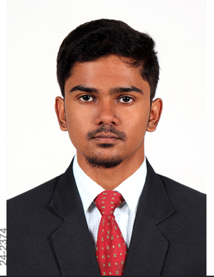

Profile

An enthusiastic Aeronautical Engineer from Kumaraguru College of Technology, Coimbatore, with a strategic mindset eager to leverage knowledge in aerospace and aeronautical engineering. Skilled in innovation, problem-solving, and critical thinking, with hands-on experience as a Technical Assistant, adept at handling challenges and determining optimal solutions.
Work History
Final Year Project
Kumaraguru College of Technology, Coimbatore | 2024-07 - 2024-11
- Conducted research and analysis on the Optimization of Swirler Configuration for improved fuel-air injection and NOx reduction in gas turbine engines.
Intern
Indian Air Force, 5BRD Sulur | 2024-07 - 2024-08
- Played a pivotal role in formulating the Critical Path Diagram for the Check II A/B Servicing of AVRO HS-748 Aircraft, significantly improving service efficiency.
- Collaborated with a cross-functional team to optimize maintenance workflows, ensuring the operational readiness of high-value military aircraft.
- Actively contributed to the International Defense Aviation Expo 2024, showcasing innovation in defense aviation and aeronautical systems.
- Demonstrated exceptional problem-solving and technical skills under a high-stakes environment.
Brake Lead
Garage KCT, Coimbatore, IN | 2023-04 - 2024-04
- Led the Brakes Subsystem for the SAEINDIA BAJA Electrical Category (E-Blitz) in 2024, successfully clearing braking requirements.
- Worked on subsystems: Rollcage, Brakes.
- Conducted research on Electric Vehicle Retrofitting.
- Designed and fabricated an electric bike, recognized for "The Lightest Bike" and "The Best Accelerating Bike".